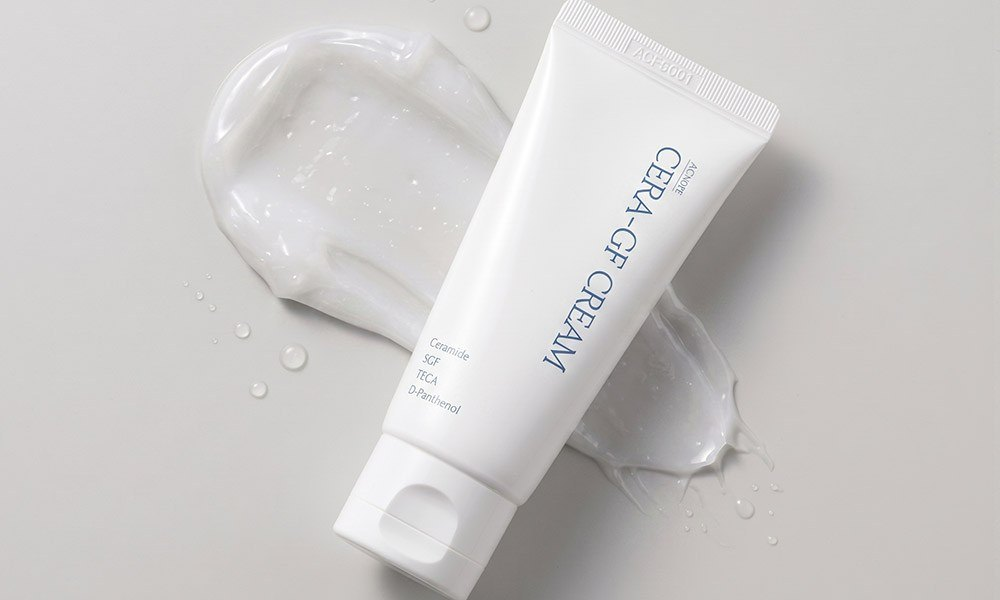

ACNOPE CERA-GF Cream Review: Korean Ceramide, Centella and Panthenol Barrier Cream Duo, Plus Wholesale Sourcing

1. ACNOPE CERA-GF Cream Review: Overview
This ACNOPE CERA-GF Cream review covers a Korean ceramide barrier cream that has been quietly popular with sensitive-skin shoppers in Korea. ACNOPE (아크노프) packs ceramide, a 5GF peptide complex, centella (TECA) and D-panthenol into a hygienic 50 ml squeeze tube, and the Korean listing we reviewed sells it as a duo of two tubes.
In Korea the cream is pitched for the season when cheeks feel tight and look red after cleansing — the classic autumn-to-winter barrier problem. It is the kind of product Korean shoppers buy two of: one for the bathroom, one for the desk.
"A no-fuss Korean barrier cream: ceramide-cholesterol-fatty acid lipids, centella actives and panthenol in a hygienic tube."
2. Key Ingredients and What They Do
Here is what the tube and the brand's Korean detail page highlight, checked against the full ingredient list printed on the official product information sheet:
| Ingredient group | Where it appears in the INCI list | Role described by the brand |
|---|---|---|
| Centella asiatica extract | 2nd ingredient, right after water | Soothing base of the formula |
| Ceramide NP + cholesterol + fatty acids | Ceramide NP, cholesterol, myristic, palmitic and stearic acid | The "세콜지" lipid trio for the skin barrier |
| D-panthenol (dexpanthenol) | 4th ingredient; detail page states 50,000 ppm | Moisture and comfort for dry, sensitive skin |
| TECA (centella actives) | Asiaticoside, asiatic acid, madecassic acid, plus madecassoside | Calming support for irritated-looking skin |
| 5GF peptide complex | sh-oligopeptide-1, sh-oligopeptide-2, sh-polypeptide-1, -3 and -16 | Skin-conditioning "growth factor" peptides |
| Others | Allantoin, betaine, trehalose, hydrogenated lecithin | Hydration and texture |
We list only what is printed on the official information sheet and do not add percentages that the brand does not publish, except the panthenol figure that ACNOPE states itself. The brand also states the formula is free of phenoxyethanol, parabens, benzyl alcohol, benzophenone, artificial colorants and synthetic fragrance.


3. How to Use It
- Cleanse and apply your toner.
- Ampoule or serum next, if you use one.
- CERA-GF Cream last: take a fingertip amount and spread it evenly. The brand FAQ says that if you also use a gel moisturiser, apply that first and CERA-GF on top.
- Dry patches: the brand suggests re-applying a little on tight areas rather than piling on a thick layer everywhere.
- Morning: finish with sunscreen.
For oily skin, the brand's FAQ recommends starting with a small amount and adjusting by season. That matches our expectation for a barrier cream: in winter a full layer, in humid summer months a thin one.


4. ACNOPE CERA-GF vs. Other Korean Barrier Creams We Reviewed
| ACNOPE CERA-GF Cream | Centellian24 Madeca Cream Time Reverse Zero | Dr.G Black Snail Cream | |
|---|---|---|---|
| Hero ingredients | Ceramide-cholesterol-fatty acids, 5GF peptides, TECA, D-panthenol | Centella (TECA) cream line from a pharmaceutical company | Snail mucin-style moisturiser |
| Packaging | 50 ml hygienic squeeze tube (duo in this listing) | Jars (multi-pack listing) | Jars (duo listing) |
| Fragrance | No synthetic fragrance (brand statement) | Check the carton | Check the carton |
| Best if you want | A simple barrier cream for tight, reactive-looking skin | A well-known centella cream with a firming angle | A richer anti-aging moisturiser |
All three are Korean creams our Seoul desk has covered, but they solve different problems. CERA-GF is the most barrier-focused and the most minimal in packaging.
5. Pros & Cons
| Pros | Cons |
|---|---|
| Ceramide + cholesterol + fatty acid trio, not just one ceramide | Small 50 ml tubes — heavy users go through them quickly |
| Centella extract high in the INCI list, plus TECA actives | Peptide "growth factor" claims are the brand's own, not clinical proof |
| Hygienic tube, no fingers in a jar | Identical U.S. Amazon listing of this Korean duo not confirmed |
| No synthetic fragrance, 5-free formula (brand statement) | Can feel rich on very oily skin in summer |
6. Who It Suits (and Who Should Skip It)
- Good match: Dry or tight-feeling skin, especially in autumn and winter.
- Good match: Shoppers who want a fragrance-free, minimal-step barrier cream.
- Good match: Retailers building a sensitive-skin or "skin barrier" shelf with Korean indie brands.
- Patch-test first: Very reactive skin or anyone sensitive to peptides or plant extracts.
- Ask a professional: During pregnancy the brand itself advises checking the full ingredient list with a doctor first.
7. ACNOPE CERA-GF Cream FAQ
What is ACNOPE CERA-GF Cream?
It is a 50 ml Korean barrier cream from the brand ACNOPE (아크노프), made in Korea. The tube lists four headline ingredient groups: ceramide, 5GF, TECA (centella actives) and D-panthenol. The Korean ShoppingConnect listing we reviewed sells it as a duo of two 50 ml tubes.
What do ceramide, 5GF and TECA mean on the tube?
Ceramide (with cholesterol and fatty acids, the brand's '세콜지' trio) supports the skin's lipid barrier. 5GF is the brand's name for a growth-factor-style peptide complex (EGF, IGF and FGF-type sh-peptides in the INCI list). TECA refers to the centella asiatica actives asiaticoside, asiatic acid and madecassic acid. Centella asiatica extract is the second ingredient after water.
Is it fragrance-free?
The brand states no synthetic fragrance is added and lists a '5-free' formula without phenoxyethanol, parabens, benzyl alcohol, benzophenone or artificial colorants. It also states a skin primary irritation test was completed. That is not a guarantee for every skin, so patch-test first.
When and how do I use it?
Morning and evening as the last skincare step. The brand's own FAQ gives the order toner → ampoule → CERA-GF cream; if you also use a moisturiser, apply that first. Use sunscreen on top in the morning.
Can I order ACNOPE CERA-GF Cream wholesale from Korea?
Yes, send an inquiry. Availability, carton quantity and export paperwork are confirmed case by case with the brand channel. Contact DUCKCHEON KOREA by WeChat (intid85), WhatsApp (+82 10-2754-9616) or email (duckcheonkorea@gmail.com).
8. B2B Wholesale & Export Sourcing
Want to Source ACNOPE CERA-GF Cream and Other Korean Barrier Skincare Directly from Korea?
Do you need authentic Korean sensitive-skin and barrier-care products for your stores, e-commerce channels, clinics or distribution network?
DUCKCHEON KOREA (https://dctrade.co.kr/) supplies verified, genuine Korean cosmetics directly from South Korea to buyers and partners worldwide. Contact our export and curation desk via WeChat (intid85), WhatsApp (+82 10-2754-9616) or Email (duckcheonkorea@gmail.com) for quotes and availability. Tell us the item (single tube or duo), your target market and your estimated volume.
🛒 Single-Unit Retail / Sample Buyers: Want a tube for yourself? Click Buy on Amazon below to search ACNOPE CERA-GF Cream listings. We could not confirm a U.S. listing that matches this exact Korean duo, so the button opens a product-name search. For bulk B2B wholesale & export orders from South Korea, contact our Seoul desk.